Healthcare discovery felt fragmented
The supplied research reports navigation complexity, cluttered interfaces, difficulty finding telemedicine and friction during appointment booking.
HEALTHCARE PRODUCT DESIGN / DOCTOR DISCOVERY & APPOINTMENTS
Reducing friction across speciality discovery, doctor comparison, appointment scheduling and booking confirmation.
Skedoc is a healthcare discovery and appointment-booking experience. The supplied project archive documents research artefacts, competitor benchmarking, a visual system and a mobile booking flow—from exploring specialities and finding doctors to selecting a date/time, recovering from a slot conflict, reviewing appointment details and confirming the booking.
Project context: The supplied archive contains research and design artefacts, but not a dated project brief, release record or analytics export. Role, project ownership, team composition and project-specific dates should be confirmed against your original records before publishing.
A hiring manager should understand the problem, your responsibility, the design decisions and the delivered experience quickly. This summary is grounded in the supplied research and product screens.
The supplied research reports navigation complexity, cluttered interfaces, difficulty finding telemedicine and friction during appointment booking.
Structure a mobile-first experience so patients can find a speciality, compare doctors, understand availability, choose a slot and confirm an appointment.
Review user feedback and competitor patterns; define the patient journey and information hierarchy; design doctor discovery, filters, profiles, scheduling, conflict recovery and confirmation.
The supplied designs cover speciality discovery, doctor results, verified profiles, date/time selection, unavailable-slot recovery, review and booking, and appointment confirmation.
The source research points to four connected experience problems: finding the right doctor, navigating the interface, discovering telemedicine and completing a booking without confusion.
Patients need to narrow a broad provider set by speciality, location, availability and relevant doctor information—not just browse an undifferentiated list.
The research slide reports that many respondents were unaware of telemedicine or had difficulty finding and booking a virtual consultation.
The source survey reports complexity, longer-than-expected booking and a desire for more guidance during the process.
Verified status, doctor experience, clinic/location, consultation fee, available slots and appointment details all help support an informed choice.
Unlike the other project archives, Skedoc includes user-research material. The source states that 10 qualitative interviews were conducted with a mix of frequent healthcare-app users and people new to telemedicine. It also includes a separate-looking percentage summary, whose sample details need clarification.
Reported difficulty navigating healthcare-app features.
Navigation issueFound the interface cluttered and overwhelming.
Interface clarityWere unaware of the telemedicine feature.
Feature discoverabilityAmong users aware of telemedicine, had trouble finding or booking a virtual consultation.
Telemedicine accessFound the booking process too complicated and longer than expected.
Booking frictionWanted more guidance during booking to avoid confusion.
Booking guidanceWanted stronger filters such as location, availability and specialization.
Search refinementQualitative interviews are reported in the interview-insights material.
Interview participants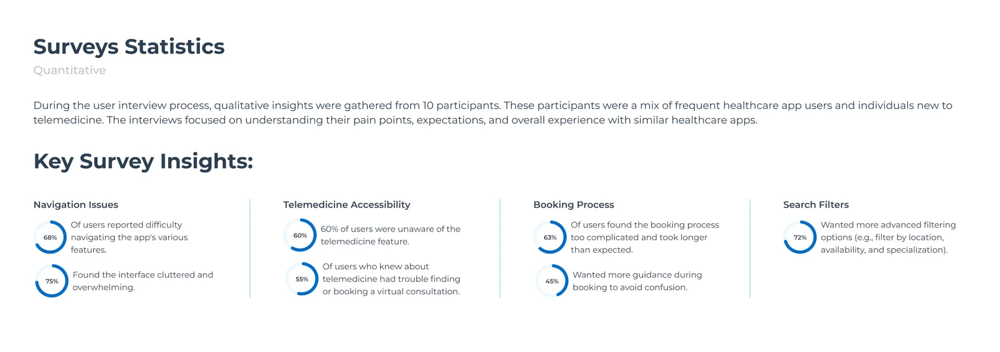
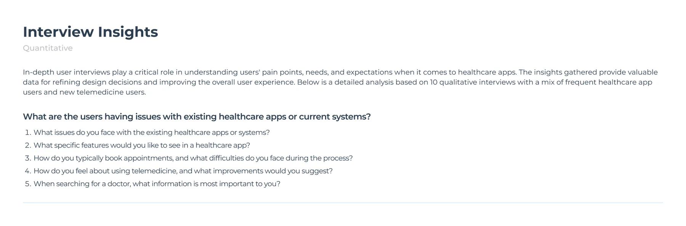
The source describes a mix of frequent healthcare-app users and participants new to telemedicine. The five prompts cover existing-app issues, desired features, appointment-booking behavior, telemedicine perceptions and what matters when choosing a doctor.
The survey-statistics graphic reports percentages across navigation, clutter, telemedicine awareness, booking complexity and search filters. The sample size, field dates, recruitment method and raw response counts are not included in the archive.
| Research signal | Interpretation | Design implication | Priority |
|---|---|---|---|
| 68% report navigation difficulty; 75% report clutter. | The interface needs a clearer hierarchy and fewer competing choices. | Organize discovery around speciality and make the primary action obvious. | High |
| 60% unaware of telemedicine; 55% of those aware struggle to find/book it. | Telemedicine needs stronger visibility and a more understandable route. | Expose consultation mode earlier in discovery and make its availability clear. | High |
| 63% say booking is too complex; 45% want more guidance. | Booking needs progressive disclosure, clear steps and reassurance. | Use a guided date/slot → review → verification → confirmation sequence. | High |
| 72% want more advanced search filters. | Patients need to narrow results around their specific constraints. | Prioritize location, speciality and availability filters. | High |
The supplied empathy map captures four dimensions—Says, Thinks, Does and Feels. I have translated its statements into design opportunities while preserving the distinction between direct research notes and interpretation.
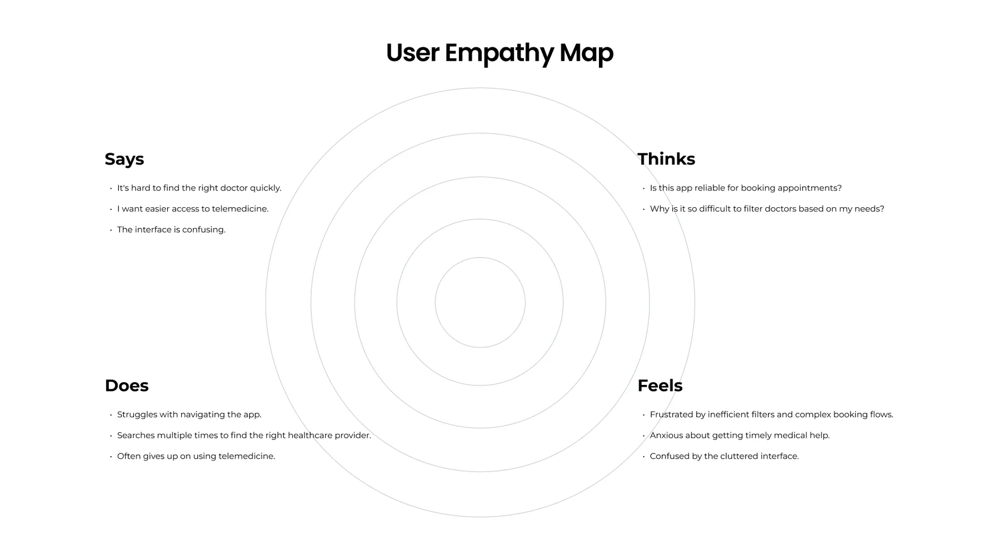
Patients express difficulty finding the right doctor and question whether the app can be trusted for appointments. They also want to understand how to filter doctors based on their needs.
The empathy map describes repeated searches, difficulty navigating and sometimes giving up on telemedicine. It also captures anxiety about timely care and frustration with inefficient filters.
Start with recognizable specialities and make the route from a category to relevant doctors obvious.
Surface verified status, experience, clinic/location, fee and next availability where patients compare doctors.
A slot conflict should offer nearby alternatives instead of forcing the patient to restart doctor discovery.
Repeat the doctor, date, time, fee and patient note after booking so patients can verify what they have secured.
The supplied benchmark compares Practo, Lybrate, Tata 1mg and DocPrime across discovery, telemedicine, booking ease, verification, reminders, mobile responsiveness and medical-history capabilities. The comparison is a snapshot from the project artefact, not a current market audit.
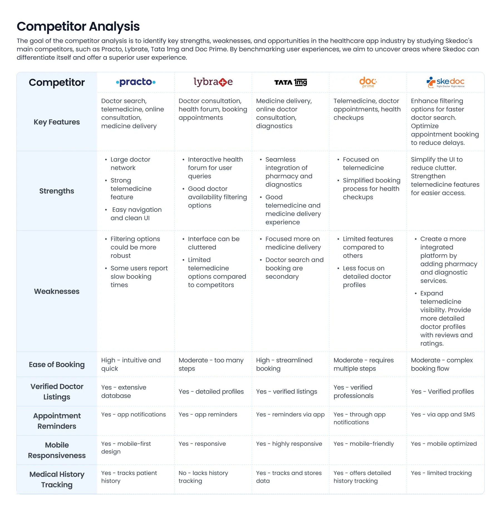
| Competitor in source matrix | Strengths recorded | Weaknesses / opportunity recorded | Skedoc design response |
|---|---|---|---|
| Practo | Large doctor network, telemedicine and clean navigation. | Filtering could be stronger; some users report slow booking. | Improve filters and reduce steps between doctor choice and slot confirmation. |
| Lybrate | Health forum and doctor-availability filtering. | Interface can feel cluttered; telemedicine options described as limited. | Use clearer visual hierarchy and improve telemedicine visibility. |
| Tata 1mg | Pharmacy and diagnostics integration, telemedicine and medicine delivery. | Doctor search and booking are described as secondary to medicine delivery. | Keep doctor discovery and appointment booking central to the experience. |
| DocPrime | Telemedicine focus and simplified health-checkup booking. | Source matrix describes fewer features and less detailed doctor profiles. | Strengthen doctor detail, verification and review information. |
Prioritization connects the research signals to what must work first. The matrix below is a portfolio reconstruction based on the supplied research and UI screens—not a claim about an approved product backlog.
These steps deliver the core patient job: select a doctor and secure an appointment.
These reduce uncertainty and address reported discovery and booking needs.
Potential extensions identified by the competitive comparison and wider healthcare needs; validate scope and feasibility.
Proposed non-goals for this booking-focused release, not confirmed stakeholder decisions.
The journey translates the research themes into the patient task, and maps each stage to a screen or recovery point in the supplied prototype.
This is a task-based journey reconstructed from the provided research and screens. No emotion scores or task completion rates are claimed because the archive does not include journey-testing data.
The information hierarchy follows the patient's intent: discover a speciality, refine the doctor set, inspect a profile, schedule a slot and confirm the appointment. Supporting actions remain accessible after confirmation.
IA boundary: This is a booking-flow IA derived from the supplied screens. It is not a complete sitemap of all Skedoc products, provider portals, medical records or telemedicine consultation rooms.
The most important part of booking UX is not only helping patients choose a slot—it is helping them recover when the slot changes before confirmation.
Explore care categories.
Choose specialty.
Filter / sort and compare.
Review expertise and trust cues.
Choose an available time.
Verify and book.
Patient value: progress from a broad need to a confirmed appointment without repeated searching.
Patient selects a time.
Another patient booked it.
Show 10:30, 11:30, 12:30.
Patient chooses another slot.
Continue without restarting.
This recovery pattern is explicitly represented in the supplied slot-conflict screen: the selected slot is no longer available, and the interface presents nearby alternatives.
Recheck date, time and fee.
Enter up to 250 characters.
Enter phone number.
Complete verification.
View appointment and next actions.
The review screen says OTP is sent to verify the mobile number and confirmation follows verification. The archive shows booking confirmation, but not the actual OTP entry screen.
Each decision maps a research signal to a product response, while making the trade-off and remaining validation work visible.
| Decision | Research signal / user need | Design response | Trade-off / validation |
|---|---|---|---|
| Lead with speciality discovery | Navigation complexity and difficulty finding the right doctor. | Organize the home experience around recognizable speciality cards and a speciality selector. | Validate taxonomy, labels and whether patients search by symptom, speciality or doctor name. |
| Improve doctor comparison | Need for more effective filters and confidence in provider choice. | Show verified status, speciality, experience, clinic/location, fee and next availability in result cards. | Keep cards scannable; validate which details most affect selection. |
| Expose filters and availability | 72% report wanting advanced filters, including location, availability and specialization. | Place filters, available-today and sort controls at the top of doctor results. | Define filter persistence, clear-all behavior and no-results recovery. |
| Use a guided date-and-slot step | 63% say booking is complex; 45% want more guidance. | Separate date selection from available time slots and show the chosen doctor context alongside them. | Validate slot refresh and timezone/date labels; prevent stale availability. |
| Design explicit slot-conflict recovery | Real-time availability can change during booking. | Explain that the chosen slot is gone and show closest available alternatives. | Ensure alternatives are live, selectable and rechecked before final confirmation. |
| Review before OTP | Patients need confidence that the correct appointment is being booked. | Show doctor, speciality, date/time, fee and optional note before phone verification. | Make fees and cancellation rules visible; handle OTP failure and resend. |
| Make post-booking actions visible | Patients need to know what happens next. | Confirmation screen includes View Appointment, Reschedule, Cancel and Support. | Validate status transitions, cancellation eligibility and reminder delivery. |
The supplied mobile screens are presented in task order. The captions explain the UX job each surface performs and why the information is organized that way.
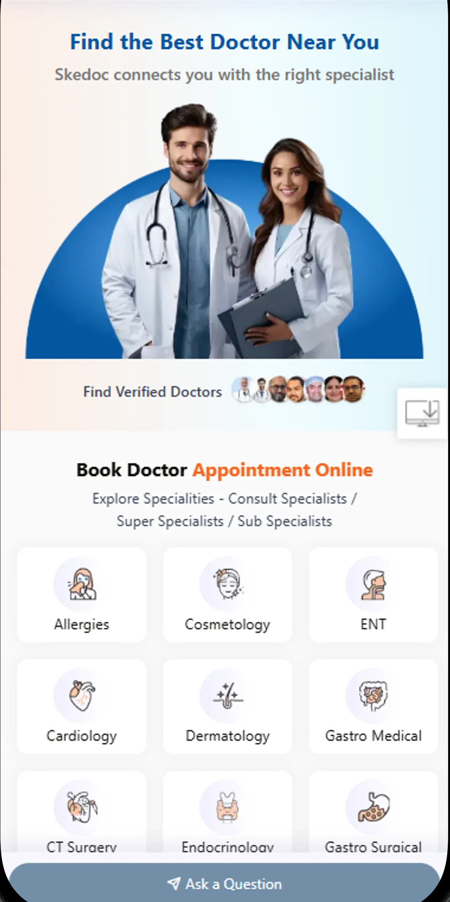
The entry screen communicates doctor discovery and presents speciality categories as a direct starting point. The persistent Ask a Question action creates an additional help/discovery route; its destination and interaction should be validated against the live product.
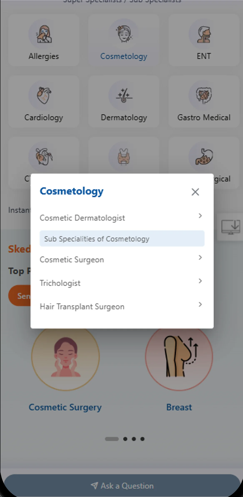
A focused speciality selector reduces the need to scan the entire home grid. Category labels and taxonomy need to match how patients describe their health needs.
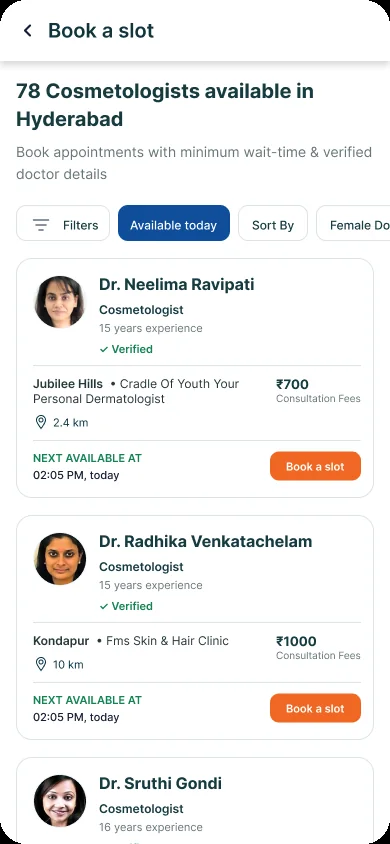
The results screen makes the search context explicit (“78 Cosmetologists available in Hyderabad”) and surfaces filter, availability-today and sort controls. Each doctor card includes verified status, years of experience, clinic/location, consultation fee and next available time.
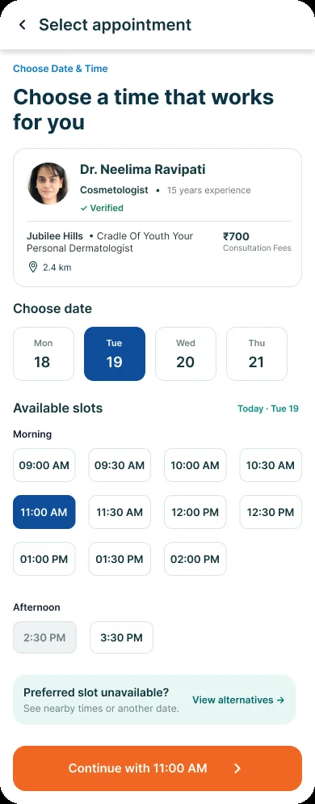
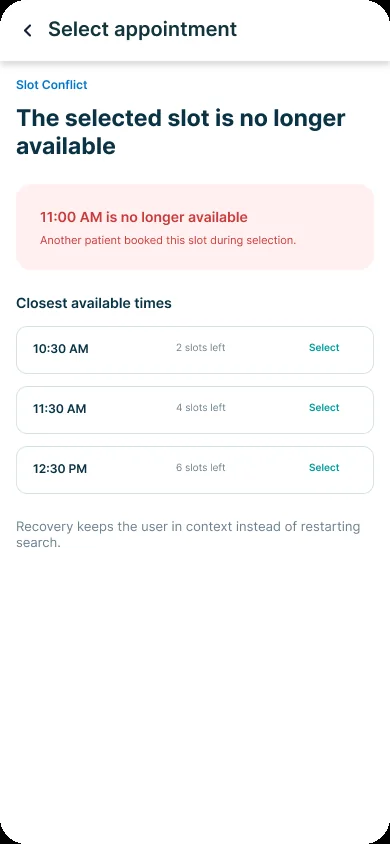
The date/time screen keeps doctor context visible beside the schedule. The conflict screen is a particularly important recovery design: it explains why 11:00 AM is no longer available and presents the closest alternatives, preserving the patient's progress.
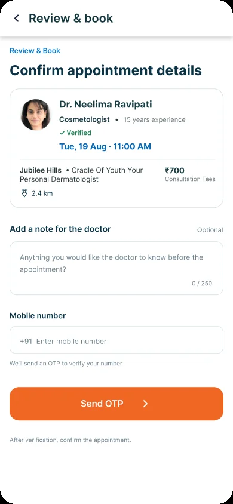
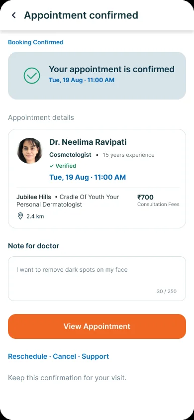
The review screen consolidates appointment information and offers an optional note for the doctor, then asks for a mobile number to verify. The confirmation screen repeats the appointment details and exposes view, reschedule, cancel and support actions.
The supplied design-system board documents colour, typography and reusable UI elements. This is stronger evidence than a palette inferred only from screenshots.
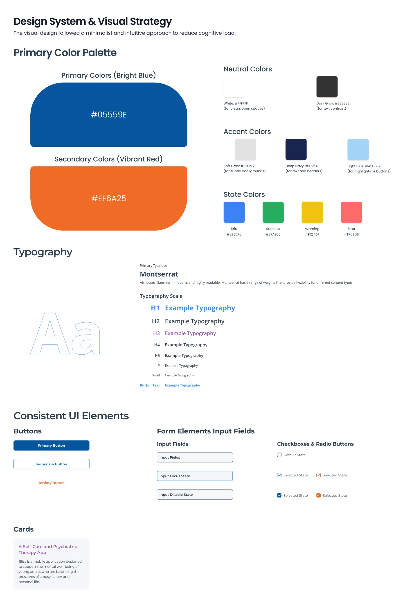
Primary blue #05559E; secondary orange #EF6A25; deep navy #1B264F; light blue #A3D5F7; soft gray #F2F2F2; white #FFFFFF; dark gray #333333.
Info #3882F6; Success #27AE60; Warning #F1C40F; Error #FF6B6B. Use labels and icons alongside colour for status and errors.
The source design-system board specifies Montserrat with H1–H5, paragraph, small and button-text styles. Keep a documented scale and consistent weights.
Primary, secondary and tertiary button styles; input default/focus/disabled states; checkbox and radio controls with default and selected states.
Card treatment for content modules and repeatable surfaces. The appointment journey also calls for doctor cards, slot selectors, status banners and confirmation summaries.
| Component family | Variants / states to define | Behavior contract | Where used |
|---|---|---|---|
| Speciality card / selector | Default · selected · disabled | Clear category name and selected state; support scroll and modal dismissal. | Home / speciality picker |
| Doctor result card | Default · selected · unavailable | Expose verification, experience, clinic, fee and next availability consistently. | Doctor listing |
| Filter chips / sheet | Default · active · applied · cleared | Show applied criteria and provide clear/reset behavior. | Doctor results |
| Date selector | Available · selected · unavailable | Keep day/date readable and distinguish selected date. | Appointment scheduling |
| Time-slot button | Available · selected · full · expired | Revalidate availability before booking and expose slot state. | Appointment scheduling |
| Conflict banner | Conflict · alternatives loading · resolved | Explain the issue and offer nearby alternatives without losing context. | Slot recovery |
| Booking summary | Review · verifying · confirmed | Repeat doctor, date/time, location and fee accurately. | Review / confirmation |
| Form input / OTP | Default · focus · invalid · disabled · verified | Provide inline validation, resend, timeout and recovery guidance. | Contact verification |
Design-system evidence boundary: The uploaded board documents visual foundations and several reusable controls. It does not show a coded React component library, Storybook, variables export or versioning workflow. Claim only the design-system work you personally created and can demonstrate in Figma.
Healthcare booking involves consequential decisions. Clear content, readable controls, transparent fees and recoverable errors help patients move forward with confidence.
Patients may browse by speciality, search by doctor or need guidance. Keep category names plain-language and controls easy to reach.
Present verified status, relevant speciality, experience, clinic location, consultation fee and availability with a predictable hierarchy.
Use persistent labels, visible focus, clear phone-number formatting, useful OTP errors and resend/timeout recovery.
When a slot is unavailable, explain why and offer alternatives. Avoid clearing the chosen doctor or forcing a new search.
These are design and QA requirements. The archive does not include formal accessibility audit results or proof of WCAG conformance. Validate contrast, screen-reader behavior, focus order and touch targets in the implemented product.
The supplied research identifies booking and discovery friction. These are the tasks and measures I would use to validate whether the redesigned flow addresses those issues.
| Usability task | What to observe | Success signal | Priority |
|---|---|---|---|
| Find a doctor for a speciality | Can the patient identify a speciality and navigate to relevant doctors? | Finds a suitable doctor without moderator help. | Critical |
| Compare two doctors | Can the patient understand verification, experience, location, fee and availability? | Explains the choice using relevant information. | High |
| Find a suitable appointment slot | Can the patient select the date and interpret slot availability? | Chooses the intended date/time correctly. | Critical |
| Recover from a slot conflict | Does the patient understand the conflict and select an alternative? | Continues without restarting doctor discovery. | Critical |
| Review and confirm booking | Can the patient verify doctor, fee, date/time and note before OTP? | Identifies any incorrect detail before confirmation. | Critical |
| Understand next steps | Can the patient find appointment details and reschedule/cancel/support actions? | Knows how to manage the confirmed appointment. | High |
Measure task success, time on task, backtracking, filter usage, slot-conflict recovery and errors in the review/OTP steps.
Track speciality-to-results, results-to-profile, profile-to-slot, slot-to-confirmation, telemedicine entry and booking abandonment—using a defined event taxonomy.
Results boundary: The archive provides initial research statistics but no post-design usability test results, conversion data or before/after metrics. Do not claim booking completion increased or booking time decreased without an analytics or test source.
The project connects user research, competitive analysis, information hierarchy, doctor discovery, scheduling, exception handling and a documented visual system into one patient-facing booking experience.
DESIGN CONTRIBUTION
Used interview and survey artefacts to identify navigation, telemedicine discoverability, booking complexity and filtering priorities.
Reviewed the source comparison of Practo, Lybrate, Tata 1mg and DocPrime to identify the intended Skedoc differentiation.
Structured speciality selection, filtered results and doctor information around verification, experience, location, fee and availability.
Designed date/slot selection and an explicit alternative-slot flow when the selected appointment becomes unavailable.
Consolidated appointment details, optional doctor note, mobile verification and a confirmation state with follow-up actions.
Worked from a documented palette, typography scale and reusable control patterns.
Healthcare UX is not only about helping people find information. It is about helping them make a consequential decision with clarity and confidence. In Skedoc, the quality of the experience depends on the details between screens: the right filter, the information that supports doctor choice, the response when a slot disappears and the reassurance after confirmation. Exception handling is part of the core journey—not an edge case to design later.